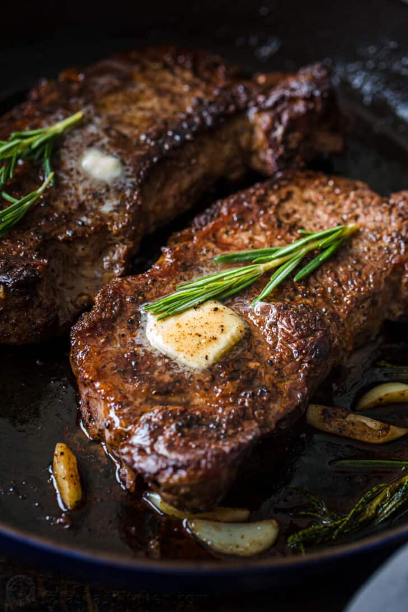

Pan-Seared Steak

Ingredients
- Your choice of steak.
- 2 cloves garlic
- 2 sprigs of rosemary
- 2 tbsp butter
- salt
- black pepper
- 1/2 lemon
Instructions
- Pat the steaks dry 30 minutes prior to cooking.
- Season liberally with salt and black pepper.
- Preheat a saute pan over medium heat, adding in 1 tbsp butter.
- Place the steak in the preheated pan, and add in the remaining tbsp of butter on top of the steak.
- Add the garlic cloves and rosemary into the pan.
- Tilt the pan to let the aromatics season the butter, and spoon the butter over the steaek as it sears.
- Remove the steak from the pan, allow it to rest for 5 minutes, and serve with a spoon of aromatic butter.
Recipe credit: natashaskitchen.com
Recipe Home